Decision Trees
Overview
A decision tree is a supervised method that predicts a class, or a number, by asking a series of yes-or-no questions about the features of an example. Each question sits at a node, such as “Is the job in San Francisco?” or “Is the top of the salary range at most $316,500?”. Each answer leads down a branch to the next question, until a leaf is reached. The leaf gives the prediction, which is the most common class among the training examples that ended up there. Trees are easy to read and explain, work with numeric and categorical features, need no scaling of the data, and pick up on combinations of features without being told about them. They are used for tasks such as credit scoring, medical triage and predicting which customers will leave, and they are the building block of methods that combine many trees, such as random forests and the boosting methods on the later pages of this site.
A tree is grown from the top down. All training examples start together at the root. The algorithm tries every feature and every possible cut point, and picks the question that splits the examples into the two purest groups, meaning groups that are each mostly one class. It then repeats this on each of the two groups, and so on, until the groups are pure or a stopping rule is reached, such as a maximum depth. The search is greedy: at each node it takes the best split available there, without looking ahead to the splits that could follow.
Gini impurity and entropy are the two usual ways to measure how mixed a group is. Gini impurity is one minus the sum of the squared class shares, which is the chance that two examples drawn at random from the group belong to different classes. Entropy is minus the sum of each class share times its base-2 logarithm, measured in bits. Both are 0 for a pure group and largest when the classes are evenly mixed: with two classes, Gini reaches 0.5 and entropy 1 bit (first figure below). To judge a split, the impurity of the two child groups is averaged, weighting each child by its size, and subtracted from the impurity of the parent. With entropy this decrease is called information gain, and the split with the largest gain is chosen. Gini and entropy almost always rank splits the same way. Gini is a little faster because it needs no logarithms, while entropy has a meaning in information theory, as the number of bits needed to describe the class.
A small example shows how this works (second figure below). A group of 100 examples holds 50 of class A and 50 of class B. A split sends 40 examples, all class A, to the left and 60 examples, 10 of class A and 50 of class B, to the right.
| Group | Class A | Class B | Gini impurity | Entropy (bits) |
|---|---|---|---|---|
| Parent | 50 | 50 | 1 − (0.5² + 0.5²) = 0.500 | −(0.5 log₂ 0.5 + 0.5 log₂ 0.5) = 1.000 |
| Left child | 40 | 0 | 1 − (1² + 0²) = 0.000 | 0.000 |
| Right child | 10 | 50 | 1 − ((10/60)² + (50/60)²) = 0.278 | −((10/60) log₂ (10/60) + (50/60) log₂ (50/60)) = 0.650 |
| After the split, weighted by size | 0.4 × 0.000 + 0.6 × 0.278 = 0.167 | 0.4 × 0.000 + 0.6 × 0.650 = 0.390 | ||
| Decrease | 0.500 − 0.167 = 0.333 | information gain = 1.000 − 0.390 = 0.610 |
The split lowers Gini impurity by 0.333 and gives an information gain of 0.610 bits. A split that left both children evenly mixed, like the parent, would have a gain of 0, and a split into two pure children would have the largest possible gain of 1 bit. The higher the gain, the better the split.
It is generally possible to create an infinite number of trees from the same data. For a numeric feature such as salary, any cut point between two neighbouring values divides the training examples in the same way, so there are infinitely many cut points to choose from, and each one gives a different tree for new examples that fall in between. On top of that, every node can ask about any feature, the tree can stop at any depth, and settings such as the smallest allowed leaf and the measure of impurity can all change. Even a small change in the training examples can change the question at the root, and with it every question below. The number of possible trees is therefore unlimited. The algorithm does not search all of them. It grows one tree greedily, and settings such as the maximum depth are chosen by testing them, as is done in this project.
This project uses decision trees to predict the same three role families as the Naive Bayes page: forward deployed engineering, solutions roles and software engineering. Three of the trees work from structured facts about each posting: its department, company, location, working arrangement, salary range, length of description and number of locations. Trees show which of these facts separate the roles, and the order of the questions shows which facts matter most. A fourth tree reads the same description words as the Naive Bayes models, so the two methods can be compared directly.
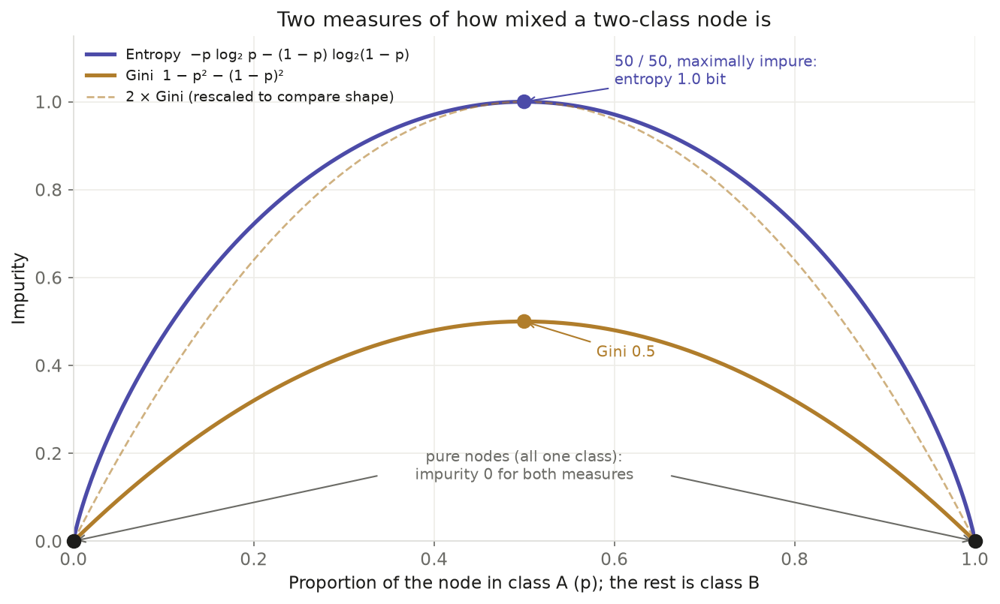

Data Preparation
Decision trees are supervised, so like Naive Bayes they can only learn from labelled data. Every posting needs its role family attached, because the tree learns which answers to its questions go with which role, and a posting without a label gives it nothing to learn from and nothing to check against. The labels are the same as on the Naive Bayes page, taken from each posting’s job title by keyword rules. The title itself is never used as a feature, and neither are two other columns built from it: the seniority level, which is read from the title by the same kind of rule, and the flag for repeated copies, which is matched on the title. Any of these would let the tree find the answer it is meant to predict.
The data is the same 1,159 postings as on the Naive Bayes page: 721 software_eng, 275 solutions and 163 forward_deployed. It also uses the same split, so the results of the two methods can be compared. The postings were divided at random into a training set of 927 (80%) and a test set of 232 (20%), stratified so that each role family has the same share in both. The two sets are disjoint, meaning no posting is in both, and this was checked by job ID. A tree is grown on the training set only, and the test set is used once, at the end, to measure how well it labels postings it has never seen. If test postings were also in the training set, the tree would be graded on examples it had already memorised, and its accuracy would look better than it really is.
Each posting is described by nine features. Four are categories: the department, which is the team name the employer gives on its job board; the company; the location; and the working arrangement, which is onsite, hybrid or remote. Five are numbers: the bottom and top of the yearly salary range, the length of the description in characters, the number of locations listed, and whether more than one location is listed. Some of these are often missing. The working arrangement is missing for 62% of postings and the salary range for 69%. A missing category was given its own value, “missing”. A missing number was filled with the median of the training set, and an extra yes-or-no column marks postings with no salary, so the tree can still use the fact that a company did not publish one. Four salaries that were clearly wrong were treated as missing, and 11 salaries given in British pounds were kept as stated.
Decision trees in scikit-learn, the Python library used here, only accept numbers. The four category columns were therefore one-hot encoded: each category becomes its own column, which is 1 for postings in that category and 0 for all others. For example, the column “location_clean = San Francisco, CA” is 1 for San Francisco postings. The questions in the tree diagrams below read “location_clean = San Francisco, CA <= 0.5”, which is true for postings outside San Francisco. The encoder and the medians were learned from the training set alone and then applied to the test set. Categories that appear only in test postings, such as the departments of 16 test postings and the locations of 7, become a row of zeros. Trees do not need the numbers to be scaled, because each question only compares one value with a cut point.
Four trees were built, each from a different set of features. Tree 1 uses all nine features, which become 222 columns after encoding. Early results showed that department alone separates the role families very well, because many employers name their teams after the role, such as “Field Engineering” or “Forward Deployed Engineering”. So tree 2 leaves out department (115 columns), and tree 3 also leaves out company (96 columns), to see how much the remaining facts about a posting can tell. Tree 4 ignores these features and uses only the description text, with company boilerplate removed and role phrases masked, turned into the same 3,631 TF-IDF word columns as on the Naive Bayes page.
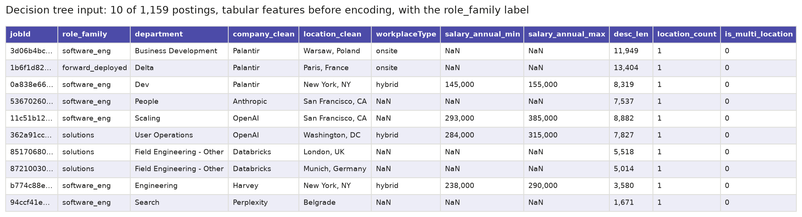
Labelled input: ten of the 1,159 postings, each with its role family label and the nine features, before the categories are encoded and missing values filled. NaN marks a missing value. The departments show how varied the employers’ team names are, from “Field Engineering - Other” at Databricks to “Delta” at Palantir. Job IDs are shortened in this image, and the linked file has them in full.
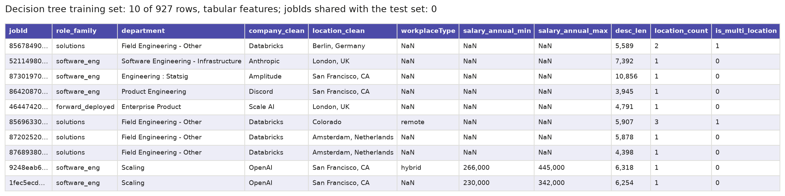
Training set: ten of the 927 training postings. The tree, the category columns and the medians used to fill missing values are all learned from rows like these.
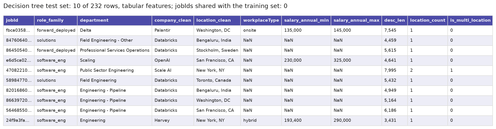
Test set: ten of the 232 test postings. None of their job IDs is in the training set. They are encoded with the categories learned from the training set, and their labels are only used to score the tree’s predictions.
Data files
- Raw data: job postings collected from company job boards with the Apify multi-ATS job scraper, using fetch_apify.py. The full raw files are about 64 MB and are not stored in the repository, so a 20-row raw sample is linked instead.
- Clean data: ats_final.csv, the 4,294 cleaned postings this page starts from, before repeated copies are removed and the three role families are selected.
- Labelled input sample: dt_input_sample.csv, shown in the first table above.
- Training set sample: dt_train_sample.csv, shown in the second table above.
- Test set sample: dt_test_sample.csv, shown in the third table above.
Code
| File | What it does | Language | Main packages |
|---|---|---|---|
| role_dt.py | Defines the four feature sets, encodes the categories and fills missing values inside a pipeline fitted on the training set, chooses the maximum depth by cross-validation, fits Gini and entropy trees, works through the Gini and entropy arithmetic for a split, runs the checks on department and company, and draws the tree diagrams and result charts. | Python 3.12 | scikit-learn, pandas, numpy, matplotlib, seaborn |
| text_nb.py | Supplies the three role families, the training and test split, and the masked description text used by tree 4, shared with the Naive Bayes page. | Python 3.12 | scikit-learn, pandas, numpy |
| 03_naive_bayes_dt.ipynb | Runs the Naive Bayes steps and then the Decision Tree steps from start to end, and saves every figure and a results report. | Python 3.12 (Jupyter) | pandas, numpy, scikit-learn, matplotlib |
| make_module3_concept_figures.py | Draws the two explanatory figures in the Overview from small made-up data. | Python 3.12 | matplotlib, numpy |
| make_module3_samples.py | Saves the small samples of the decision tree input, training set and test set shown on this page, and draws them as table images. | Python 3.12 | pandas, numpy, matplotlib |
Results
Eight trees were fitted: a Gini and an entropy version for each of the four feature sets. For each one, the maximum depth was chosen by 5-fold cross-validation on the training set alone. The training postings were split into five parts, each part was held out in turn while a tree was grown on the other four, and the depth with the best average accuracy was kept, out of 1, 2, 3, 4, 5, 6, 8, 10, 12, 15, 20 and no limit. When two depths scored the same, the shallower one was kept. Each tree was then grown on all 927 training postings and scored once on the 232 test postings. As on the Naive Bayes page, always guessing software_eng would be right for 62.1% of test postings, so that is the level any tree has to beat. The numbers below refer to the figures further down the page.
| Tree | Criterion | max_depth (CV) | Fitted depth | Leaves | Train accuracy | Test accuracy | Gap | Macro F1 |
|---|---|---|---|---|---|---|---|---|
| Tree 1: all features | Gini | none | 35 | 118 | 1.0000 | 0.9224 | 0.0776 | 0.896 |
| Tree 1: all features | Entropy | 20 | 20 | 92 | 0.9795 | 0.8879 | 0.0916 | 0.853 |
| Tree 2: no department | Gini | 12 | 12 | 131 | 0.9396 | 0.7672 | 0.1723 | 0.648 |
| Tree 2: no department | Entropy | 12 | 12 | 133 | 0.9342 | 0.7543 | 0.1799 | 0.633 |
| Tree 3: no department or company | Gini | 12 | 12 | 133 | 0.8997 | 0.7543 | 0.1454 | 0.624 |
| Tree 3: no department or company | Entropy | 20 | 20 | 235 | 0.9892 | 0.7155 | 0.2737 | 0.622 |
| Tree 4: masked text | Gini | 12 | 12 | 37 | 0.9903 | 0.8879 | 0.1024 | 0.857 |
| Tree 4: masked text | Entropy | 6 | 6 | 34 | 0.9806 | 0.8793 | 0.1013 | 0.836 |
The gap is training accuracy minus test accuracy. A large gap means the tree has learned details of the training postings that do not carry over to new ones, which is known as overfitting. Macro F1 is the average F1 score of the three classes, as on the Naive Bayes page, so the small forward_deployed class counts as much as the large software_eng class.
Choosing the depth
Deeper trees fit the training postings more closely, but past some depth they stop doing better on the postings held out during cross-validation (figure 1). For tree 1, cross-validation accuracy keeps rising until the depth is unlimited (0.891), so its Gini tree grows until every leaf is pure, 35 levels deep with 118 leaves. Tree 2 peaks at depth 12 (0.802), and tree 3 levels off near 0.73 from depth 10. Tree 4 already reaches 0.80 with a single question about one word and stays at about 0.88 to 0.90 from depth 4. The Gini and entropy curves lie almost on top of each other for all four trees.
Accuracy and confusion matrices
Each confusion matrix has the true role family on its rows and the predicted one on its columns, so correct predictions lie on the diagonal. Tree 1, which uses every feature, is the most accurate. Its Gini tree labels 92.2% of test postings correctly, close to the best Naive Bayes model (93.5%), and finds 26 of the 33 forward_deployed postings (figure 2). Removing department drops accuracy to 76.7%, and only 12 of the 33 forward_deployed postings are found (figure 3). Removing company as well costs just another 1.3 points with Gini, to 75.4%, but the tree now finds only 10 of the 33 forward_deployed postings (figure 4). In trees 2 and 3, most mistakes on the two smaller classes go to software_eng, the largest class. Tree 4, which reads the masked description text, reaches 88.8% and finds 27 of the 33 forward_deployed postings, more than any other model on this page or the Naive Bayes page (figure 5). Overall it is still 2.6 points below Multinomial Naive Bayes and 4.7 below Bernoulli Naive Bayes on the same text, because it misses more of the solutions and software_eng postings.
The four trees
Figures 6 to 9 show the top two levels of each Gini tree. The full trees are 12 to 35 levels deep, so deeper nodes are cut off and shown as (…). Each box gives the question asked, the Gini impurity, the number of training postings that reach it, how many of them are in each class, and the majority class. The class counts in the diagrams follow scikit-learn’s alphabetical order, forward_deployed, software_eng and solutions, which is different from the order used everywhere else on this page. For example, the San Francisco box in tree 1 reads [14, 341, 17]: 14 forward_deployed, 341 software_eng and 17 solutions postings, the same group described below as 14, 17 and 341. A question such as “location_clean = San Francisco, CA <= 0.5” is true for postings outside San Francisco, so those go left.
All three trees built on posting facts start with the same question: is the job in San Francisco? Of the 372 San Francisco training postings, 341 are software_eng, so this one question picks out a large group that is almost all one class. In tree 1, every question shown below it is about department (figure 6). “Field Engineering - Other” alone picks out a group of 75 postings that are all solutions, and “Professional Services Operations” is asked on both sides. The tree is sorting postings by the employers’ own team names.
Without department, tree 2 turns to the employer instead (figure 7). Its next questions ask whether the company is Databricks, Palantir, Harvey or Asana. Databricks postings outside San Francisco form the only group in its top two levels where solutions is the majority, 146 of 271, because Databricks posts most of the solutions jobs in the data. Tree 3 has neither department nor company, so it asks about other locations, Bengaluru and New York, about the top of the salary range and about description length (figure 8). Every group in its top two levels still has software_eng as its majority, so forward_deployed and solutions are only separated further down, in small groups of postings. That fits its gap of 14.5 points between training and test accuracy.
Tree 4 reads the description text, and each of its questions is about the TF-IDF weight of one word (figure 9). Its first question is how much a posting uses the word “sales”. Of the 222 postings that use it most, 180 are solutions. Among the rest, the postings that use the word “travel” most are mostly forward_deployed, 79 of 102, so the need to travel is a strong sign of a forward deployed job in this tree.
What the trees rely on
Feature importance adds up how much each feature lowers the Gini impurity across all the splits in a tree, scaled so the total is 1. In tree 1, department accounts for 58.8% of the importance, almost three times as much as location (20.5%), while company adds 8.9% and description length 7.1% (figure 10). Salary contributes little, 3.2% from the bottom of the range and nothing from the top, partly because it is missing for 69% of postings. Without department, location (41.6%) and description length (28.3%) take over in tree 2, ahead of company (17.5%) (figure 11). In tree 3, location (44.9%) and description length (34.3%) together make up nearly four-fifths of the importance, with the bottom of the salary range a distant third at 9.1% (figure 12).
A split worked through
The root split of tree 1 repeats the calculation from the Overview on the real data. Before the split, the 927 training postings, 130 forward_deployed, 220 solutions and 577 software_eng, have a Gini impurity of 0.5366 and an entropy of 1.3157 bits. The San Francisco question sends 555 postings (116, 203 and 236) one way and 372 postings (14, 17 and 341) the other. The weighted Gini impurity of the two groups is 0.4469, a decrease of 0.0897, and their weighted entropy is 1.1137 bits, an information gain of 0.2019. The San Francisco group is far purer than the parent, at 92% software_eng. Lower down, the question about “Professional Services Operations” gives a smaller gain, 0.0808 for Gini and 0.1830 bits for entropy, but it picks out a group of 46 postings of which 43 are forward_deployed.
Why department works so well
Department is the team name each employer gives on its job board, copied unchanged for all 1,159 postings, and it is not taken from the job title. Yet 1,023 of the 1,159 postings (88.3%) sit in a department that is at least 90% one role family. Separately, 221 postings are in departments whose names contain a role phrase, such as “Field Engineering”, “Delivery Solutions Architects” or “Forward Deployed Engineering”. Every one of tree 1’s 232 test predictions passes through at least one question about department, and for 53.4% of them the last question before the answer is about department. Tree 1’s accuracy therefore largely reflects how closely each employer’s team names follow its job titles.
Leaving a column out does not fully remove what it carries. A tree using only tree 3’s features can name the employer of 71.6% of test postings, against 32.3% for always guessing Databricks, mainly from description length and location. Companies write to different lengths, from a median of 3,203 characters at Perplexity to 9,411 at Amplitude, and 90.7% of the Bengaluru postings are from Databricks. In the same way, tree 2’s features recover the department 44.4% of the time, against 15.5% for always guessing the most common one.
Gini against entropy
In the main table each criterion has its own depth. To compare the two on equal terms, the entropy trees were refitted at the depth chosen for Gini.
| Tree | Criterion | max_depth | Fitted depth | Train accuracy | Test accuracy | Macro F1 |
|---|---|---|---|---|---|---|
| Tree 1: all features | Gini | none | 35 | 1.0000 | 0.9224 | 0.896 |
| Tree 1: all features | Entropy | none | 27 | 1.0000 | 0.9009 | 0.876 |
| Tree 2: no department | Gini | 12 | 12 | 0.9396 | 0.7672 | 0.648 |
| Tree 2: no department | Entropy | 12 | 12 | 0.9342 | 0.7543 | 0.633 |
| Tree 3: no department or company | Gini | 12 | 12 | 0.8997 | 0.7543 | 0.624 |
| Tree 3: no department or company | Entropy | 12 | 12 | 0.8867 | 0.7112 | 0.618 |
| Tree 4: masked text | Gini | 12 | 12 | 0.9903 | 0.8879 | 0.857 |
| Tree 4: masked text | Entropy | 12 | 10 | 1.0000 | 0.8879 | 0.850 |
At the same depth, Gini is at least as accurate as entropy for all four trees, and its macro F1 is higher in all four. The largest difference, 4.3 points for tree 3, is small next to the effect of the features, which move test accuracy by about 17 points between tree 1 and tree 3.

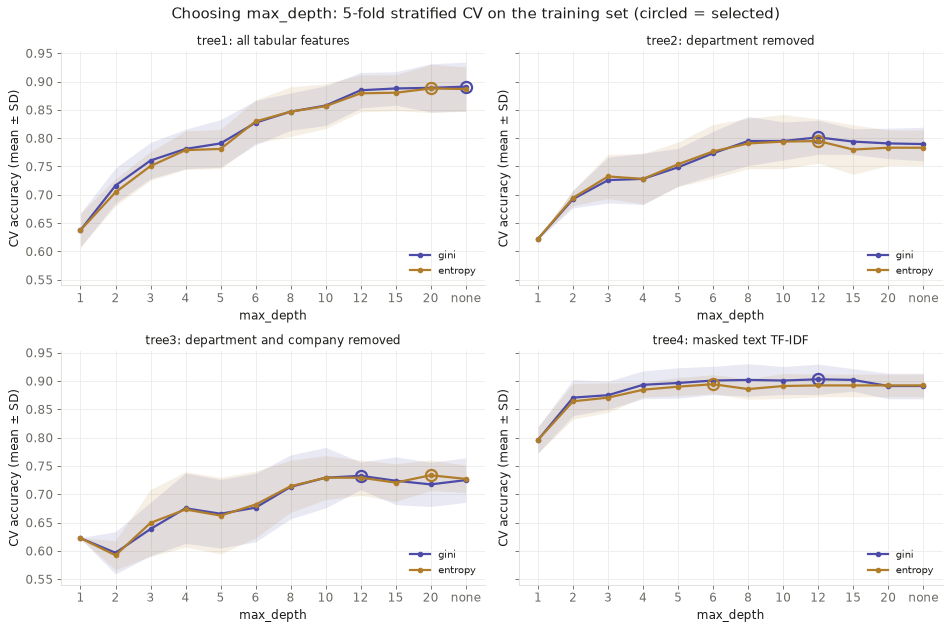
1. Choosing the maximum depth by cross-validation
Tree 1 keeps improving all the way to no depth limit, while the other trees level off earlier. Gini and entropy give almost the same curves.

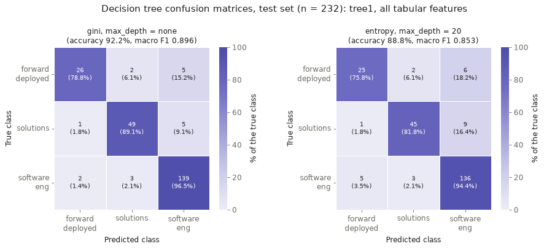
2. Confusion matrices, tree 1 (all features)
With all features, the Gini tree gets 92.2% right and finds 26 of 33 forward_deployed postings. Department does most of the work.

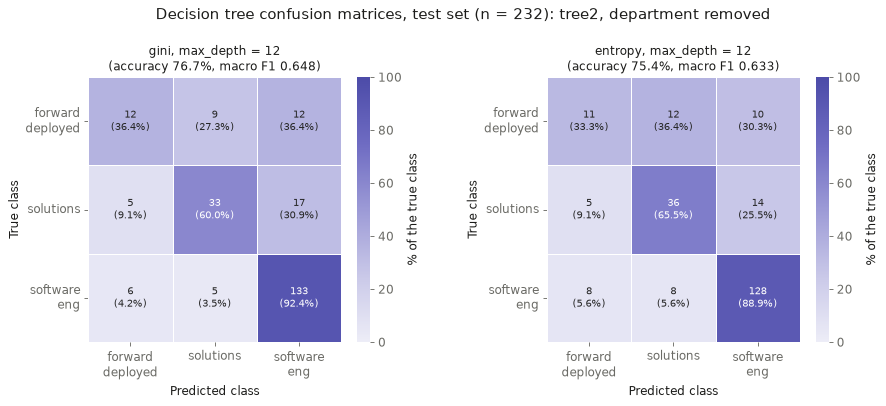
3. Confusion matrices, tree 2 (no department)
Without department, accuracy drops to 76.7% and only 12 of 33 forward_deployed postings are found. Most misses are called software_eng.

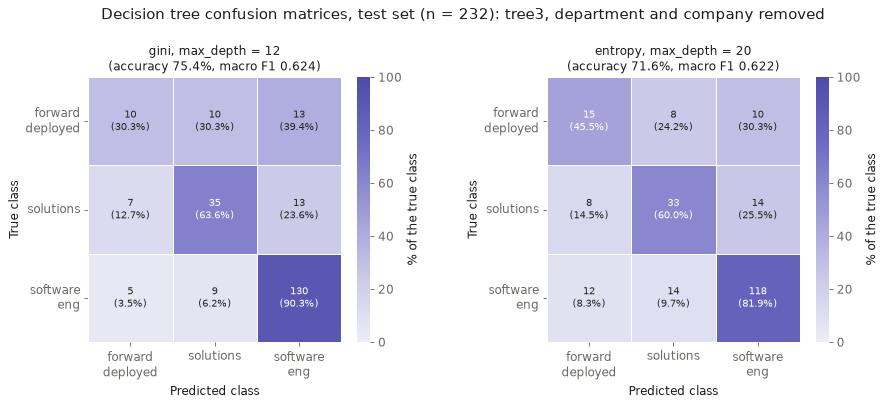
4. Confusion matrices, tree 3 (no department or company)
Without department and company, accuracy is 75.4%, only 13 points above guessing. Just 10 of 33 forward_deployed postings are found.

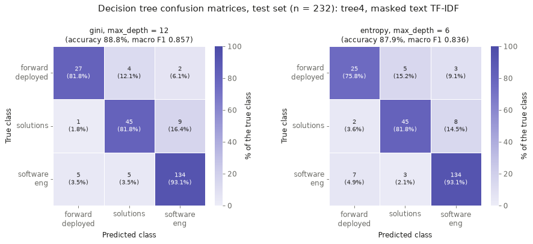
5. Confusion matrices, tree 4 (masked description text)
Reading the job text, the Gini tree gets 88.8% right and finds 27 of 33 forward_deployed postings, the most of any model. Naive Bayes is still more accurate overall.

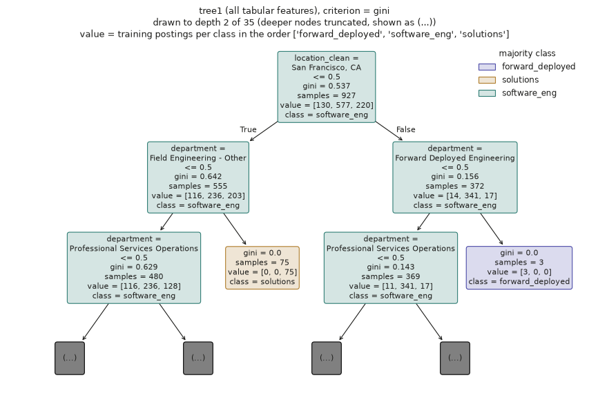
6. Tree 1 (all features), top two levels
The first question is whether the job is in San Francisco. After that, every question shown is about department, and one department question alone picks out 75 postings that are all solutions.

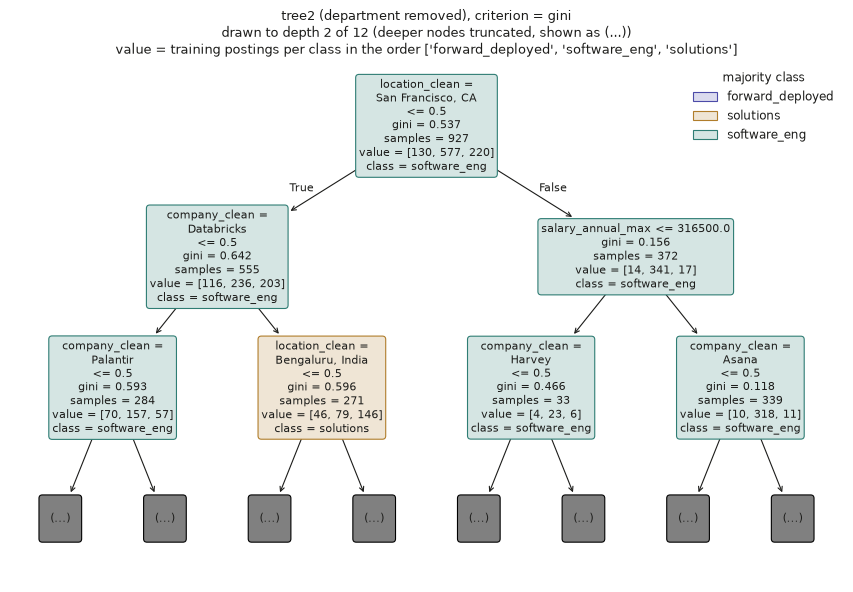
7. Tree 2 (no department), top two levels
Without department, the tree asks about the company instead: Databricks, Palantir, Harvey and Asana. Databricks jobs outside San Francisco are the only group shown where solutions is the largest class.

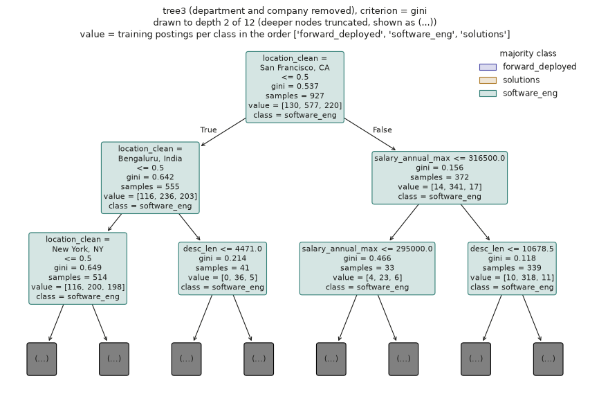
8. Tree 3 (no department or company), top two levels
Without department or company, the tree asks about location, salary and description length. Every group in the top two levels is still mostly software_eng.

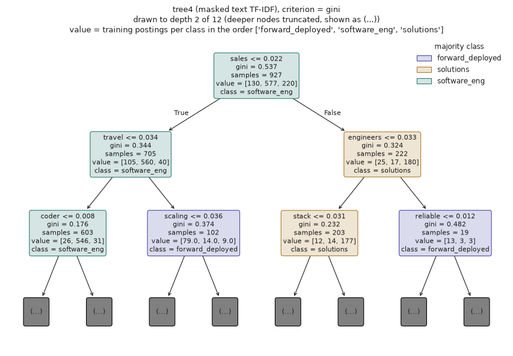
9. Tree 4 (masked description text), top two levels
The first question is how much a posting uses "sales", and those that use it a lot are mostly solutions. Postings that use "travel" a lot are mostly forward_deployed.

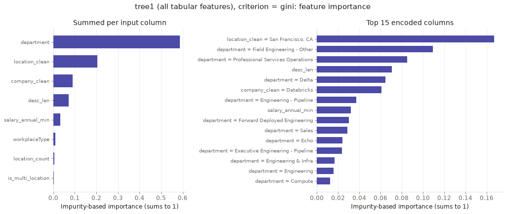
10. Feature importance, tree 1 (all features)
Department makes up 58.8% of what tree 1 relies on, about three times as much as location (20.5%). Salary barely matters (3.2%).

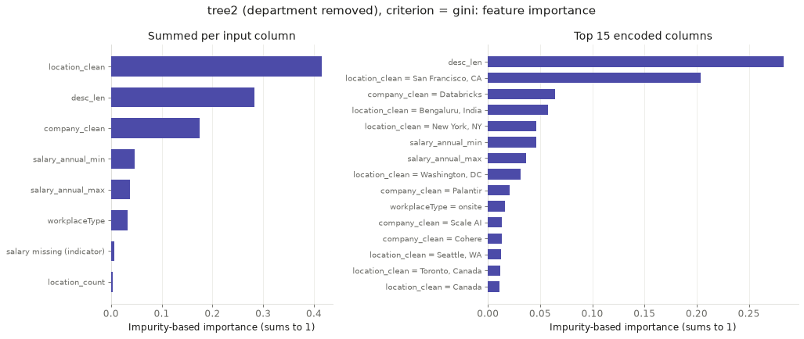
11. Feature importance, tree 2 (no department)
Without department, location (41.6%) and description length (28.3%) matter most, ahead of company (17.5%).

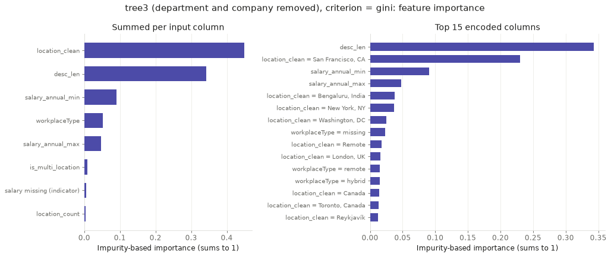
12. Feature importance, tree 3 (no department or company)
Location (44.9%) and description length (34.3%) make up almost four-fifths of what tree 3 relies on.
Conclusions
Facts about a job posting other than its description can sort these three kinds of technical work well, but mostly because employers already name their teams after the job. Using every available fact, about 92 in every 100 new postings were sorted correctly, compared with 62 from always guessing software engineering. Most of that came from the team name. Many employers place solutions engineers in teams with names like Field Engineering, and forward deployed engineers in a team called Forward Deployed Engineering, so the team name says almost as much as the job title.
Without the team name, much less can be told. Knowing the employer, where the job is, whether it is remote, what it pays when that is published, how long its description is and a few similar details, about 77 in every 100 postings were sorted correctly, and about 75 once the employer was left out as well. Forward deployed jobs become very hard to spot this way, and only about one in three was found. In location, pay and working arrangement, a forward deployed job looks much like any other engineering job.
The facts that remain still point to the employer. Where a job is and how long its description runs are enough to name the employer for about 7 in 10 postings, because each company writes at its own length and hires in its own places. Much of what these questions learn is how each company organises and describes its hiring, rather than what the jobs involve.
Reading the description itself works best for spotting forward deployed jobs. Questions about which words a posting uses found 27 of 33 forward deployed postings that had not been seen before, more than any other method tried on these pages, and two simple signals stood out: talking about sales points to a solutions job, and talking about travel points to a forward deployed one. This agrees with the previous page, where the description text alone told these jobs apart, and leads to one conclusion. What sets the forward deployed engineer apart is the work it describes, going out to customers and delivering results inside their business, not the team, place or pay attached to it. For the question of how AI is changing tech hiring, the new role shows up most clearly in what the job asks people to do.